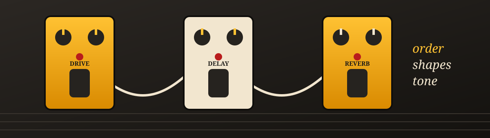
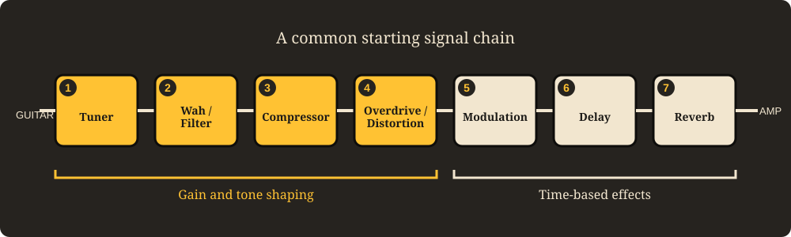

Pedalboard 101: How Guitar Pedal Order Shapes Your Tone
The same three pedals can sound polished or messy depending on one thing: the order you plug them in. This page walks through a common signal chain, explains the reasoning behind it, and shows where it is worth breaking the rules.
The basic idea
A guitar signal travels in a line. It leaves the pickups, passes through each pedal in turn, and ends at the amplifier. Every pedal receives whatever the previous one produced, so each one changes what the next one has to work with.
That is why order matters. A delay placed after an overdrive repeats the distorted sound. A delay placed before it feeds the repeats into the distortion, which fuzzes them together. Neither is wrong, but they sound very different, and one is usually closer to what players are after.
Rule of thumb: shape the sound of the guitar first, then add space and time. Tuning and dynamics come early, gain comes in the middle, and time-based effects such as delay and reverb come last.
The signal chain, step by step
Here is one widely used starting order. Treat it as a map, not a law.

-
Tuner
- Examples: a standard pedal tuner or a polyphonic tuner pedal.
- Goes first so it reads the clean, unprocessed signal, which gives the most accurate pitch reading.
- Many tuners mute the output when switched on, so you can tune silently on stage.
-
Wah and filter
- Examples: a wah-wah pedal, an envelope filter.
- These respond to the pickups and to how hard you pick, so they like a clean, direct signal.
- In front of a distortion, a wah gives the classic vocal sweep. After it, the effect is more subtle and can sound thin or harsh.
-
Compressor
- Examples: an optical compressor, a sustainer.
- Evens out the difference between loud and soft notes, which tightens clean playing and feeds drive pedals a steadier level.
- Some players place it later in the chain instead, so it smooths the result of the drive pedals. Both are common.
-
Overdrive, distortion and fuzz
- Examples: a mild overdrive for push, a distortion for heavier saturation, a fuzz for thick, buzzy tone.
- This is the heart of the guitar sound. Everything after it processes the already-driven tone.
- Stacking more than one? Many players put the lower-gain pedal first to push the higher-gain one harder.
- Fuzz pedals are often placed very early because they can react badly to other pedals sitting in front of them.
-
Modulation
- Examples: chorus, phaser, flanger, tremolo.
- These add movement by shifting pitch, phase or volume. Placed after gain, they swirl a finished tone.
- Placed before heavy gain, the distortion can exaggerate the movement and make it sound rough.
-
Delay
- Examples: analog-style delay, digital delay, tape-style echo.
- Creates repeats of what you just played, including its distortion and modulation.
- Placing it after gain keeps each repeat clear instead of turning into a blur.
-
Reverb
- Examples: spring, plate or hall reverb pedals.
- Simulates a room around everything that came before it, so it usually sits last.
- With reverb after delay, each repeat gets its own natural-sounding tail, as if the whole sound happened in one space.
Why this order works
Three ideas explain most of the standard order.
Gain before time
Distortion squashes and adds harmonics to whatever enters it. If a delay or reverb comes first, the distortion smears the echoes together and the result turns muddy. Drive first, then add space.
Dynamics early
Tuners, wahs and compressors work best when they hear the guitar itself. Pedals that rely on your picking strength need a clean, consistent signal to respond to.
Space last
Reverb and delay describe the room the sound lives in. Putting them at the end applies that room to the whole sound, which is how a real performance space behaves.
When to break the rules
Plenty of well-known sounds come from doing the opposite of the textbook. Reverb before a fuzz or overdrive can create a huge, ambient wash. A delay before distortion can produce thick, stacked textures. Modulation after a delay makes the repeats wobble and drift.
A few practical notes:
- Volume pedal: placed early, it controls how hard you drive the pedals after it. Placed last, it fades the entire sound in or out.
- Amp effects loop: if your amp is driven by its own preamp distortion, time-based effects often sound cleaner in the loop than in front of the amp.
- Power and cables: noise problems sometimes come from power supplies and cable routing, not from the order itself.
The best way to learn is to move one pedal at a time and listen. Your ears are the final judge.
Watch: effects pedal order explained
This video is a good companion to the sections above, since hearing the difference makes the reasoning easier to follow.
Live Tableau demo: storm tracking
This interactive dashboard has nothing to do with pedals. It is here to show that a live Tableau Public visualization can be embedded in a plain, hand-coded HTML page. Try hovering over the marks or using the filters.
Source: Tableau sample workbook, embedded from Tableau Public.
Try it yourself
Reading about order is one thing. Hearing it is better. The Pedalboard Sound Lab lets you rearrange pedals and compare the results.
Launch the Pedalboard Sound Lab (web app)